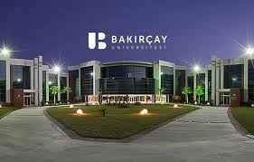

About me
I am a 3rd-year Management Information Systems student at Bakırçay University. I have been developing my skills in database management, data analytics, and the digital transformation of business processes. My interest in technology and eagerness to learn have enabled me to work on various projects using tools like Power BI, SQL, and other data analysis platforms. I actively contributed to the digital transformation of a restaurant, gaining practical experience in the field. My goal is to help organizations align with technology and participate in projects that manage data effectively and efficiently.
Experiences
- Reception at Air Boss Hotel 01.07.2021 - 10.09.2021
- Moto courier at McDonald's 22.06.2022 - 01.09.2023
- Moto courier at Yemeksepeti 25.06.2024 - 10.08.2024
- Moto courier at Trendyol 15.08.2024 - 01.10.2024
Education
- İzmir Bakırçay University / Faculty of Economics and Administrative Sciences / Department of Management Information Systems / Management İnformation Systems PR(English) 08.09.2020 - Present
Skills
- SQL
- PowerBI
- C#
- C+
- UiPath(at basic level)
- Spss(at basic level)
- HTML,CSS(at basic level)
- Microsof Office Programs(Excel,word,powerpoint)
References
Institution: Bakırçay University
Email: erman.coskun@bakircay.edu.tr
Institution: Bakırçay University
Email : fares.dael@bakircay.edu.tr
İzmir Bakırçay University
